Memórias
Onde tudo começou...
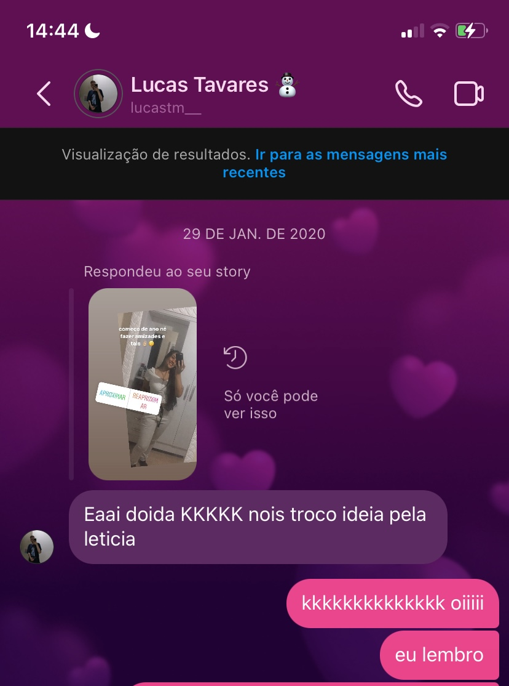A primeira vez que conversamos de fato e você já me chamou de "doida", foi aí que me conquistou...
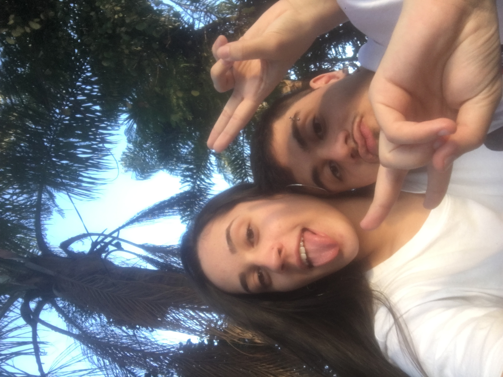O primeiro açaí que tomei na vida, junto com a primeira vez que estive com o amor da minha vida.
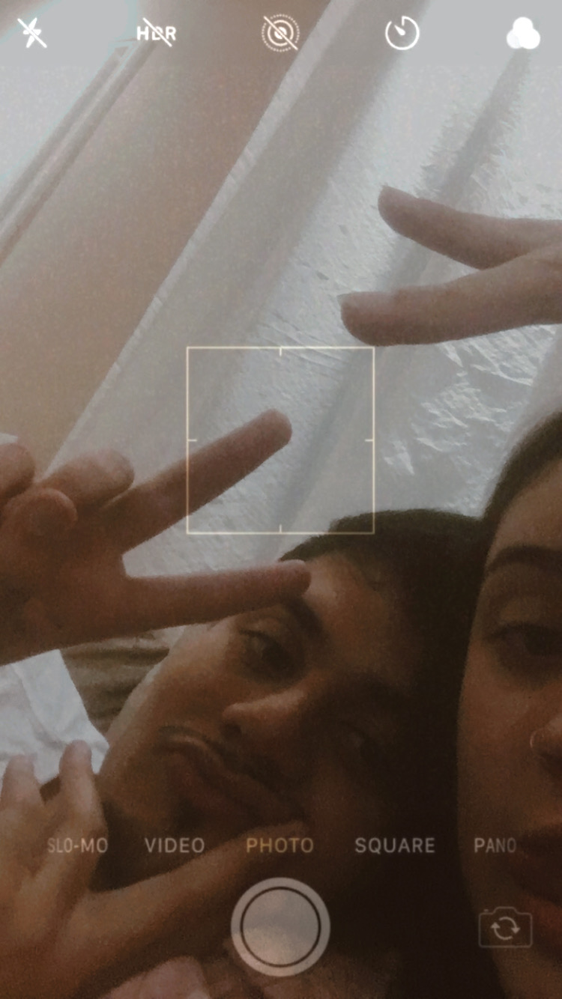A primeira vez que você conheceu minha família e veio aqui em casa.
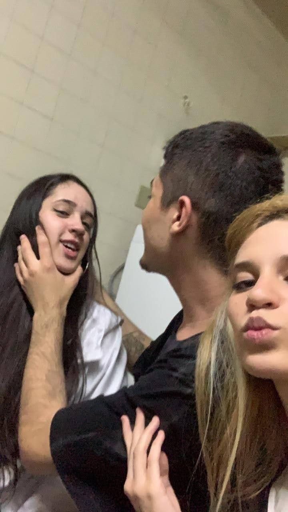Gostaria de não falar muito sobre esse dia, mas está aí uma memória dele.
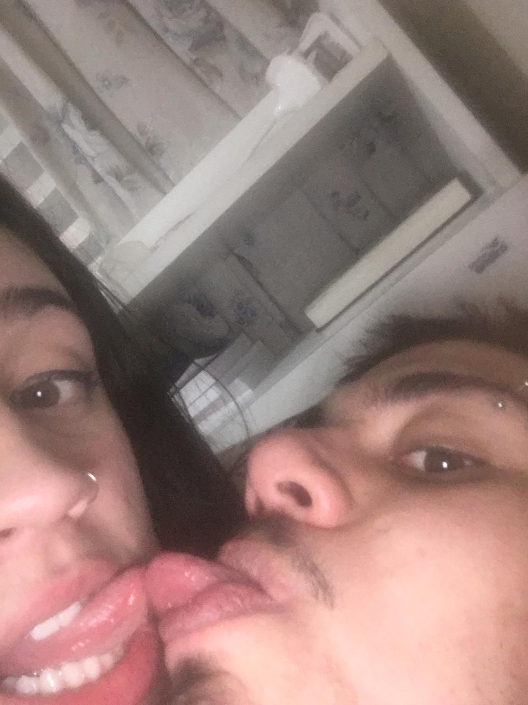Essa foto que já foi fundo do meu celular por muito tempo.
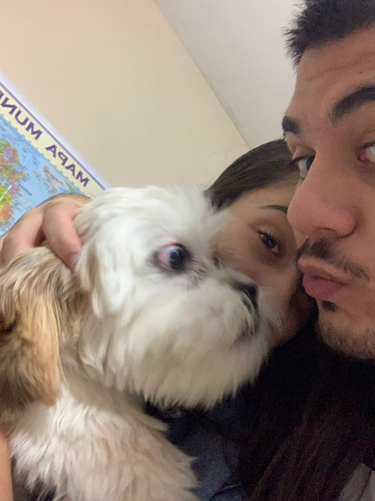Você e o Scott que é nosso filho que você ajudou e contribuiu muito para eu ter, e te agradeço por isso.
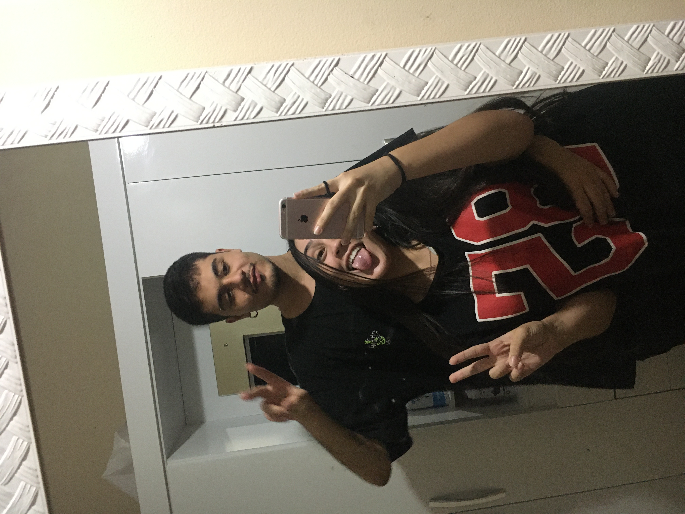Quando a gente se assumiu no Instagram e um milhão de pessoas clicaram no seu perfil

Você na minha formatura com o Raul, mal sabíamos o quanto ele ia te amar atualmente.
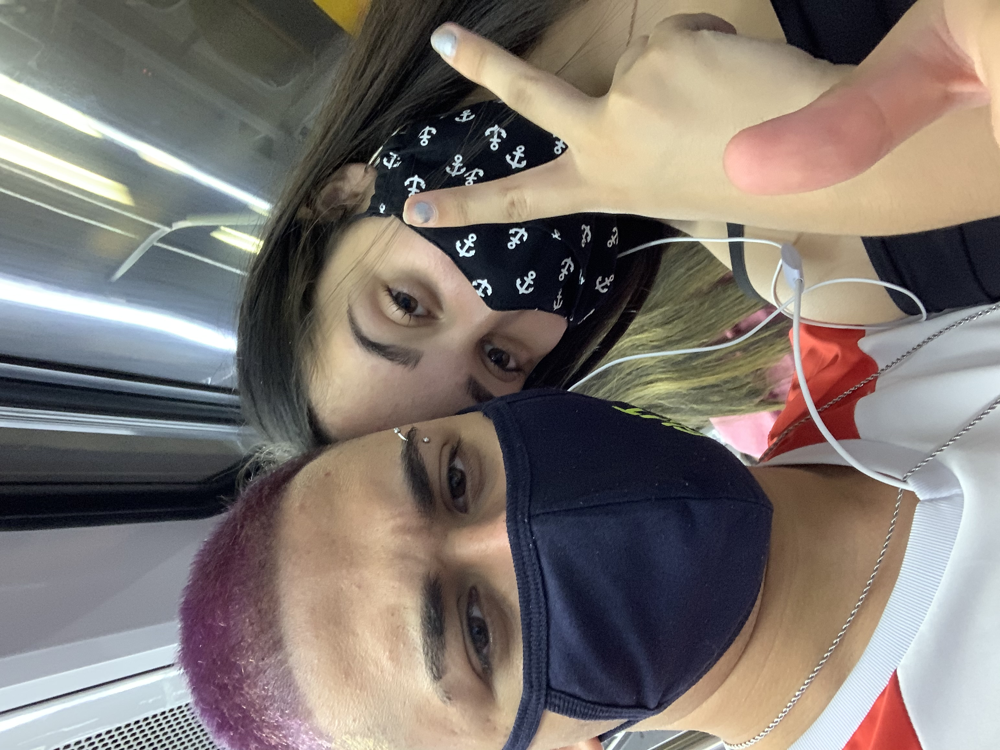Quando terminamos e uma semana depois já estávamos juntos saindo.
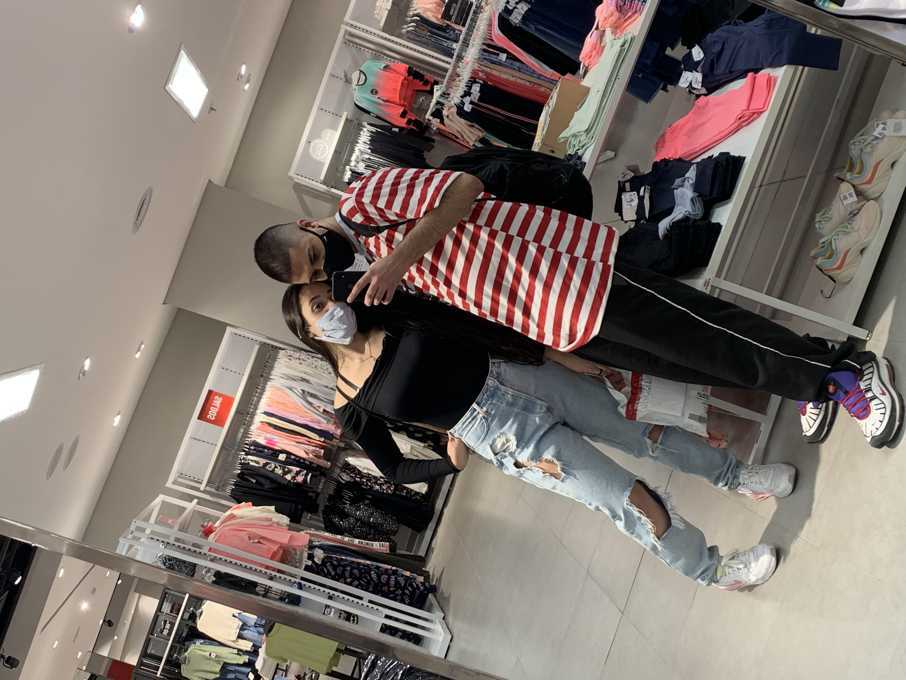 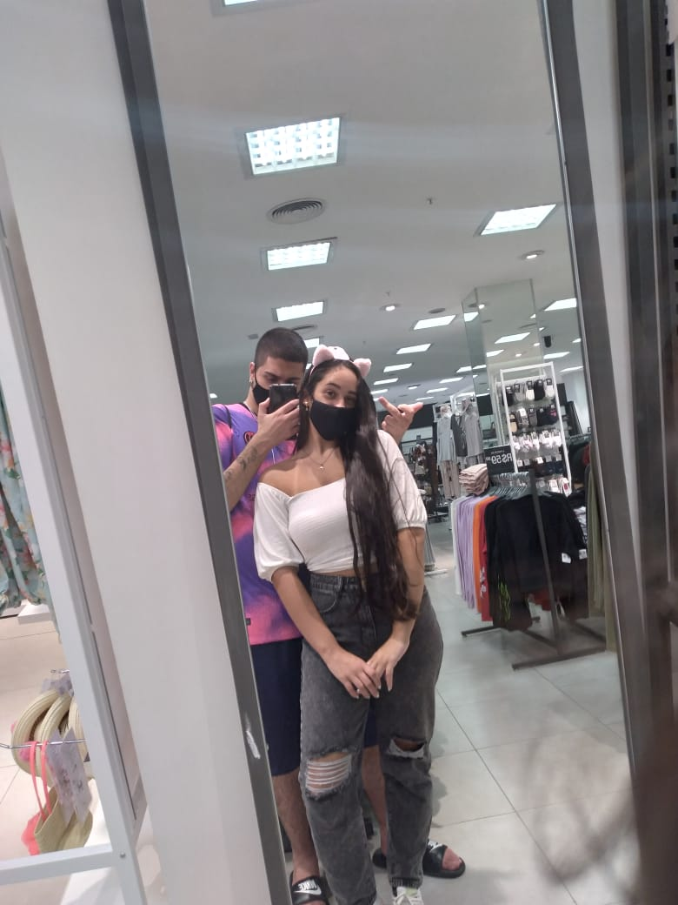Sempre indo no shopping resolver coisinhas juntos.
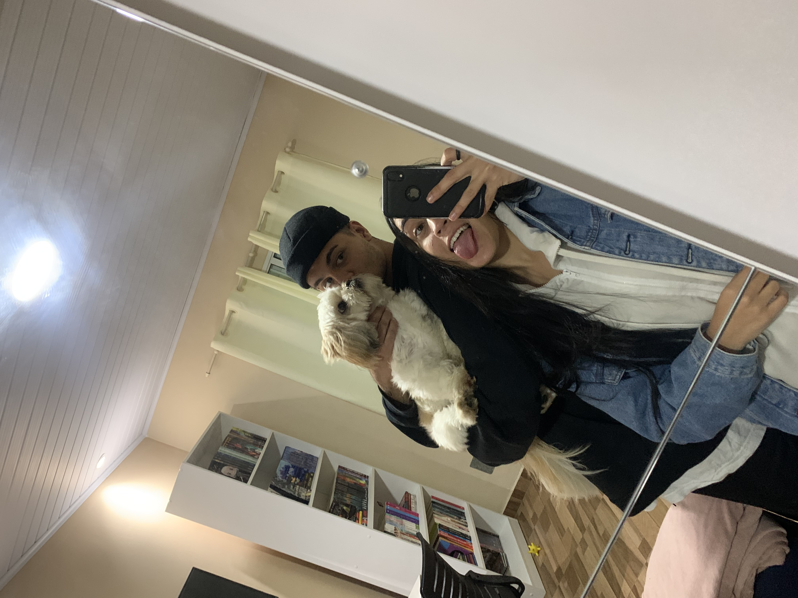Antes de eu ir viajar pro Rio, uma dor me despedir de você todas as vezes.
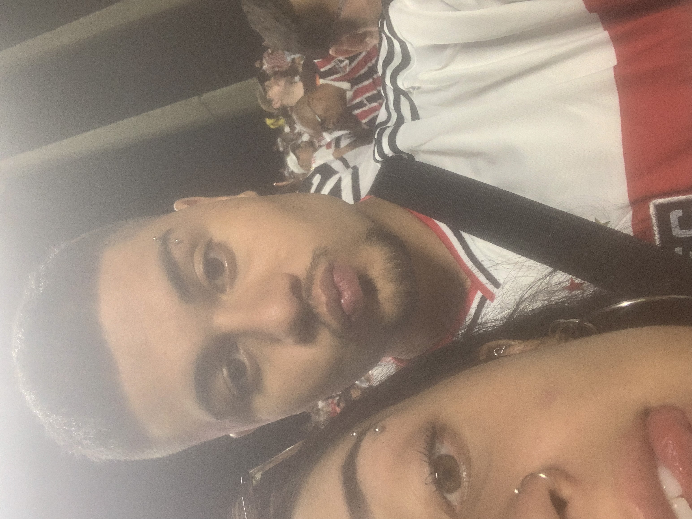Mais recentemente quando fomos para o estádio do São Paulo juntos.